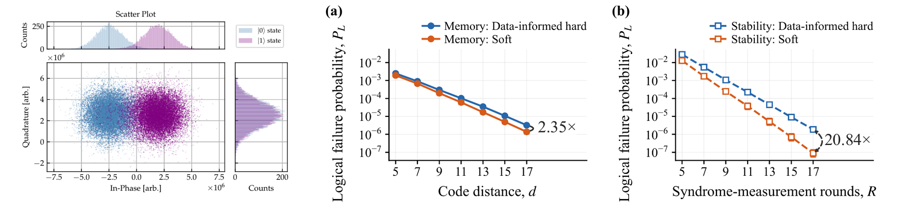

Abstract
- 1Department of Quantum Engineering, Sungkyunkwan University, Suwon 16419, Republic of Korea
- 2Elmore Family School of Electrical and Computer Engineering, Purdue University, West Lafayette, Indiana 47907, USA
- 3Department of Quantum Information Engineering, Sungkyunkwan University, Suwon 16419, Republic of Korea
Reliable large-scale quantum computation requires quantum error correction (QEC). The surface code corrects errors by decoding syndromes obtained from repeated stabilizer measurements [1]. In superconducting qubits, readout yields continuous in-phase and quadrature (IQ) signals, but conventional decoding uses only their binary outcomes, discarding the confidence of individual measurements (Fig. 1). Since readout errors are a major noise source, this information loss can limit QEC performance [2].
Soft decoding incorporates this analog readout information into decoding weights. Previous studies mainly investigated soft decoding in memory experiments, which evaluate the preservation of logical information over time [3–5]. In contrast, stability experiments assess the reliability of inferring the global product of stabilizer measurement outcomes across a spatially extended region, a benchmark relevant to logical measurements in lattice surgery [6]. Although soft decoding also benefits stability experiments [7], how much analog readout information improves logical-measurement reliability and reduces measurement overhead, and which error mechanisms limit these gains, remain to be quantified. As an initial step, we simulated memory and stability experiments under a common homogeneous circuit-level noise model with Gaussian IQ readout, and compared hard and soft minimum-weight perfect matching (MWPM) decoders with the same readout-error calibration.
At the largest settings studied (memory: d = 17; stability: R = 17), soft decoding reduced logical error rates (LERs) by factors of 2.35 and 20.84, respectively (Fig. 2). In future work, we will investigate how readout misclassification (soft flips) and pre-measurement bit-flip errors (hard flips) affect these gains, how spatially inhomogeneous readout noise influences them, and whether similar improvements can be achieved for logical measurements performed by lattice surgery.

- A. G. Fowler, M. Mariantoni, J. M. Martinis, and A. N. Cleland, Phys. Rev. A 86, 032324 (2012).
- R. Acharya et al. (Google Quantum AI), Nature 638, 920 (2025).
- C. A. Pattison, M. E. Beverland, M. P. da Silva, and N. Delfosse, arXiv:2107.13589 (2021).
- H. Ali et al., Phys. Rev. Appl. 22, 044031 (2024).
- M. D. Hanisch, B. Hetényi, and J. R. Wootton, APS Open Sci. 1, 000019 (2026).
- C. Gidney, Quantum 6, 786 (2022).
- L. Caune et al., arXiv:2410.05202 (2024).
- C. Gidney, M. Newman, and M. McEwen, Quantum 6, 813 (2022).